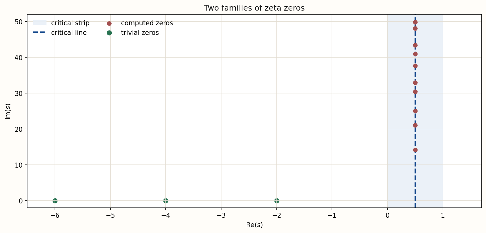
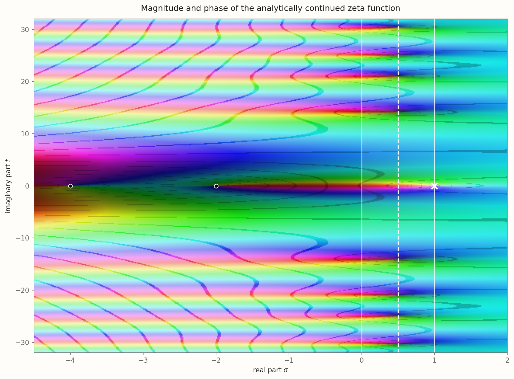

Euler's prime product
Euler wrote the relevant work in 1737 and published it in 1744, exposing the product structure behind reciprocal-power sums.
One function connects three mathematical worlds: infinite sums, the prime numbers, and a hidden pattern of zeros in the complex plane. We will begin with ordinary fractions and build each new idea only when it becomes useful.
A computer never adds infinitely many terms. It can add the first $N$ terms and show how the partial sum changes as $N$ grows. That is enough to reveal a sharp difference between reciprocals and squared reciprocals.
$p$ controls how quickly the terms shrink; $N$ is the number of terms included.
Change the exponent and number of terms. The plot uses a logarithmic horizontal scale so early and late behavior remain visible together.
At p = 1, the harmonic partial sums continue to increase.
The terms approach zero, but too slowly. Grouping terms from $2^k+1$ through $2^{k+1}$ contributes roughly another $1/2$ each time, so the total keeps growing.
The terms shrink fast enough that the remaining tail can be trapped under a finite area. The infinite sum approaches a finite limit.
For positive decreasing $f(x)=x^{-p}$, rectangles compare the sum with $\int_1^N x^{-p}\,dx$. If $p\neq1$, this integral is $(N^{1-p}-1)/(1-p)$. It remains bounded as $N\to\infty$ exactly when $p>1$. For $p=1$, it is $\log N$, which grows without bound.
For each real $s>1$, let the p-series run to its limiting value. This turns one convergence question into a function:
Euler's evaluation of $\zeta(2)$ solved the Basel problem: the surprising appearance of $\pi$ links a sum over whole numbers to circle geometry. The value $\zeta(3)$ is called Apéry's constant. Roger Apéry proved in 1978 that it is irrational; no comparably simple formula in powers of $\pi$ is known.
The target uses an accelerated numerical evaluation; the partial sum uses exactly the selected finite number of terms.
Unique prime factorization gives each positive integer one prime-power recipe. For example, $12=2^2\cdot3$, $30=2\cdot3\cdot5$, and $72=2^3\cdot3^2$. That uniqueness lets a product over prime choices generate every $n^{-s}$ exactly once.
Multiply one such geometric series for each prime. Selecting $2^{-2s}$, $3^{-s}$, and $1$ from the other factors creates $12^{-s}$. No other selection creates it.
The finite product approaches the zeta value as more primes are included.
Inside the absolutely convergent half-plane, taking a logarithmic derivative packages prime powers with the von Mangoldt function:
This identity is a direct route from zeros and poles of zeta to weighted prime powers.
Write $s=\sigma+it$. The horizontal coordinate $\sigma=\operatorname{Re}(s)$ is the real part; $t=\operatorname{Im}(s)$ is the imaginary coordinate. A complex number $a+ib$ can be drawn as an arrow from the origin to $(a,b)$.
The length of the $n$th arrow is $n^{-\sigma}$. Its direction has angle $-t\log n$. Adding the arrows head to tail forms a complex partial sum.
The thick gold arrow is the cumulative sum; thin colored segments are individual terms.
A function can first be discovered through one formula and then be uniquely continued beyond that formula's original region. Analytic continuation extends the function while preserving every value where the formulas overlap.
The eta series converges for $\operatorname{Re}(s)>0$ and absolutely for $\operatorname{Re}(s)>1$. Thus $\zeta(s)=\eta(s)/(1-2^{1-s})$ continues zeta across much of the larger half-plane, with qualifications where the denominator vanishes. At $s=1$ there is a genuine pole; the other denominator zeros in this half-plane are removable in the quotient.
Select a layer to read its role. Boundaries indicate formula domains, not different functions.
The Dirichlet series converges absolutely for Re(s) > 1.
Here $\gamma$ is the Euler-Mascheroni constant. The coefficient $1$ of $(s-1)^{-1}$ says that the pole is simple and has residue $1$.
For $\operatorname{Re}(s)>1$,
Subtracting the singular behavior of the integrand near $x=0$ and integrating by parts provides routes to continuation. The identity theorem then guarantees uniqueness wherever analytic continuations overlap.
The Gamma function extends factorials: $\Gamma(n)=(n-1)!$ for positive integers $n$. Combining it with zeta and two elementary factors removes the pole and packages the symmetry into an entire function.
The reflection $s\mapsto1-s$ mirrors points across the vertical line $\operatorname{Re}(s)=1/2$. Since zeta also respects complex conjugation, nontrivial zeros occur in reflected and conjugate configurations.
$\zeta(-2)=\zeta(-4)=\zeta(-6)=\cdots=0$. They arise in the functional equation and are simple. They are zeros of zeta, not zeros inserted by the completion.
$\pi^{-s/2}\Gamma(s/2)\zeta(s)$ is meromorphic. Multiplying by $\tfrac12s(s-1)$ produces the entire $\xi$ function with $\xi(0)=\xi(1)=1/2$.

At negative even integers, the sine factor vanishes while the remaining factors are handled by continuation, producing the trivial zeros. One must not infer extra zeta zeros merely from zeros or poles of individual factors before checking cancellations.
There are no zeta zeros for $\operatorname{Re}(s)>1$ because of the absolutely convergent Euler product. The functional equation reflects that information to the left, apart from the trivial zeros. The remaining, nontrivial zeros lie in the open critical strip.
Positive ordinates are computed with mpmath at 40-digit precision and stored as doubles for display.
Loading computed zero data.
If an off-line zero $\rho$ existed, symmetry would also produce $\bar\rho$, $1-\rho$, and $1-\bar\rho$, with coincidences possible on symmetry axes. The explorer's quartet is visibly labeled hypothetical; no such zero is known.
At each point $s$, zeta has a magnitude $|\zeta(s)|$ and an angle, or phase, $\arg\zeta(s)$. Domain coloring assigns hue to phase and brightness to magnitude. Dark meeting points indicate zeros; the pole near $s=1$ becomes very bright. Repeated dark contours show logarithmic magnitude levels.

The prime-counting function $\pi(x)$ counts primes at or below $x$. It is a staircase: it jumps by one at a prime and stays flat at composite numbers. The prime number theorem says $\pi(x)\sim x/\log x$. The logarithmic integral usually gives a better smooth approximation.
PV denotes the Cauchy principal value needed because $1/\log t$ is singular at $t=1$.
Prime counts are exact through 500; the two smooth curves are numerical evaluations.
For explicit formulas, prime powers are easier to handle than primes alone. The von Mangoldt function places weight $\log p$ at $p,p^2,p^3,\ldots$ and zero elsewhere:
Here $\psi_0$ takes the midpoint of the jump at a prime power, zeros are counted with multiplicity, and the zero sum is interpreted symmetrically by height. The term $x$ is the smooth trend from zeta's pole; nontrivial zeros supply oscillatory corrections; trivial zeros supply the final logarithmic term.
Every displayed curve is a finite critical-line truncation of the symmetric zero sum.
Showing a truncation with 30 conjugate zero pairs.
Directly solving $\zeta(s)=0$ means making both real and imaginary parts vanish. On the critical line, the functional equation supplies a phase correction that makes the result real.
The logarithm of Gamma is followed continuously with $\vartheta(0)=0$. For real $t$, $Z(t)$ is real and $|Z(t)|=|\zeta(1/2+it)|$. Its real zeros are exactly the ordinates of critical-line zeros, with multiplicity.
Samples have spacing 0.05; listed roots come from separate high-precision zero computations.
Loading Hardy Z samples.
The Riemann-Siegel formula evaluates $Z(t)$ using about $\sqrt{t/(2\pi)}$ main terms plus a controlled remainder, far fewer than a naive continuation formula at large height. Rigorous computations combine interval arithmetic, adaptive root isolation, and zero-counting information. Turing-type methods compare counted sign changes with an independently controlled count to certify completeness over a finite interval. The browser visualization performs none of that industrial-scale certification.
Let $N(T)$ count nontrivial zeros $\rho=\beta+i\gamma$ with $0<\gamma\leq T$, including multiplicity. Away from a zero ordinate, a precise formula is
where the argument follows the standard continuous path from $2$ to $2+iT$ to $1/2+iT$. Its smooth asymptotic form is
The exact staircase here is exact relative to the included list of 500 computed ordinates and stops just above its last entry.
The average density is roughly $\log(T/(2\pi))/(2\pi)$ zeros per unit height. Thus zeros become more tightly packed as $T$ increases, even though the local gaps continue to fluctuate.
Order positive ordinates as $\gamma_1\leq\gamma_2\leq\cdots$. A raw gap $\gamma_{n+1}-\gamma_n$ is compared with the local mean spacing $2\pi/\log(\gamma_n/(2\pi))$.
Uses gaps beginning after the first 50 zeros to reduce the most pronounced low-height distortion.
Montgomery's pair-correlation work predicts that suitably normalized pairs of high zeta zeros repel one another with the same sine-kernel pattern that appears among eigenvalues of large random Hermitian matrices. Odlyzko's computations later found striking numerical agreement.
This is the conjectured off-diagonal pair-correlation density, not the nearest-neighbor gap density. The broader GUE conjecture predicts all local correlation levels and is stronger than Montgomery's pair-correlation conjecture.
The matrix sample uses 40 independent 40 by 40 Haar-unitary matrices. Circular eigenangle gaps are normalized to mean one.
Loading deterministic simulation data.
The subject did not advance through a sequence of almost-proofs. It grew through identities, continuation, prime-distribution theorems, results about subsets of zeros, statistical conjectures, and certified finite computations.
Euler wrote the relevant work in 1737 and published it in 1744, exposing the product structure behind reciprocal-power sums.
Riemann continued zeta to the complex plane, connected its zeros to prime counting, and formulated the hypothesis now bearing his name.
von Mangoldt made the zero-based explicit formula rigorous. Hadamard and de la Vallée Poussin independently proved the prime number theorem by establishing zero-freeness on $\operatorname{Re}(s)=1$.
von Mangoldt established the zero-counting formula. Hardy proved that infinitely many zeros lie on the critical line.
Selberg proved that a positive proportion of nontrivial zeros lie on the critical line.
Montgomery proved a restricted theorem, under RH in its classical formulation, and conjectured the full pair-correlation law.
Levinson proved more than one third of zeros lie on the line; Conrey later proved more than two fifths.
Large computations found strong numerical agreement between high zeta-zero spacings and random-matrix predictions.
Pratt, Robles, Zaharescu, and Zeindler proved an unconditional critical-line proportion exceeding 0.417293.
Platt and Trudgian rigorously verified that every zero through this finite height lies on the critical line.
Recent work improves explicit zero-free regions and zero-density bounds, yielding quantitative consequences for prime distribution without proving RH.
Technical results about zeta zeros are not interchangeable. This table is the vocabulary needed to read recent claims without turning every improvement into an alleged proof of RH.
| Result type | What it controls | What it does not control | Typical status | Relationship to RH |
|---|---|---|---|---|
| Zero-free region | A specified region proved to contain no zeros. | The rest of the critical strip. | Often unconditional. | A region near $\operatorname{Re}(s)=1$ is far weaker than placing every zero on $1/2$. |
| Zero-density estimate | An upper bound for $N(\sigma,T)$, the number of zeros in a right-hand part of the strip. | It need not make that count zero. | Often unconditional. | Restricts how numerous off-line zeros could be; does not eliminate them. |
| Critical-line proportion | A lower bound for $N_0(T)/N(T)$ in a limiting sense. | Zeros outside the proven proportion. | Unconditional results exist. | RH requires 100 percent and no exceptional zero. |
| Computational verification | Zeros through a finite certified height. | All higher zeros. | Rigorous but finite. | Strong finite evidence cannot settle an infinite statement. |
| Bound on $\zeta(s)$ | The function's size in a stated region or average. | Usually not exact zero locations. | Conditional or unconditional. | May support zero estimates without proving RH. |
| Zero statistics | Spacing, correlation, moments, or distributions. | Every individual zero location. | Theorem, conjecture, or computation. | Statistical laws can coexist logically with rare exceptions. |
| Conditional result | A conclusion assuming RH or another stated hypothesis. | The truth of the assumption. | Explicitly conditional. | Explains consequences; it is not evidence that the assumption has been proved. |
| Actual proof of RH | Every nontrivial zero, without an unproved assumption. | Nothing in the RH statement remains. | No accepted proof as of the cutoff below. | This alone resolves RH. |
For $N(\sigma,T)$ counting zeros with real part at least $\sigma$, their large-value estimates imply
Combined with Ingham's estimate, this improves the previous uniform density exponent $12/5$ to $30/13$ and contributes to primes-in-short-interval results.
It bounds how many off-line zeros may occur; it does not prove the count is zero.
The published work improves the explicit Korobov-Vinogradov denominator constant to $53.989$ in a region of the form
It also supplies explicit bounds for $|\zeta(\sigma+it)|$ in its stated range.
The excluded region lies near real part 1 and leaves most of the critical strip untreated.
The preprint states zero-freeness for $t\geq3$ and
improving the peer-reviewed classical constant $5.558691$ from Mossinghoff, Trudgian, and Yang (2024), if the preprint result is validated through publication.
This is a clearly labeled unreviewed result near real part 1, not a proof of RH.
The established peer-reviewed benchmark is
The same paper gives a lower bound $0.407511$ for the proportion that are simple and on the line.
More than 41.7 percent is not the 100 percent required by RH.
Interval-arithmetic computation verifies that every zero with
lies on the critical line. No authoritative superseding certified-height paper was found in the source audit by the cutoff.
Every finite height leaves infinitely many zeros untested.
The authors establish an unconditional Montgomery-type pair-correlation framework. A 61.7 percent simple-zero application in the paper requires an additional near-critical-line or strong zero-density hypothesis and is therefore conditional.
Pair correlation concerns aggregate statistics and neither requires nor establishes RH.
See the complete local recent-results audit for authors, status, exact classifications, benchmark notes, sources, implications, and non-implications.
The Python generator uses mpmath, NumPy, and Matplotlib. It verifies $\zeta(2)$, $\zeta(4)$, initial zero ordinates, conjugation behavior, Z values at listed roots, zero-count consistency, the random seed, and dataset metadata.
python3 -m pip install -r riemann-zeta-function/requirements.txt
python3 riemann-zeta-function/scripts/generate_numerical_assets.py